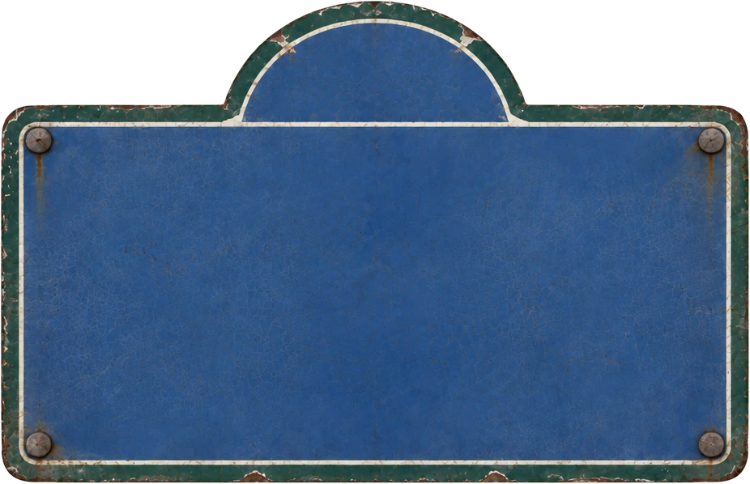

14e ARRtMa-Shi-TaRUE POIRIER DE NARÇAY
Ma-Shi-Ta 마시따
Korean food and natural wine in Paris 14th · 파리 한식당 · 9 rue Poirier de Narçay
I haven't been yet, but I want to go.
Ma-Shi-Ta: prices, hours, address
- Address
- 9 rue Poirier de Narçay, 75014 Paris
- @paris_mashita
- Website
- ma-shi-ta.com
- Lunch set
- €16.50–19.50
- Dinner starters
- €9–14
- Dinner mains
- €18–25
- Desserts
- €6–13
- Two branches
- 9 rue Poirier de Narçay (14th, 01 40 52 11 65), 6 rue Mabillon (6th, 01 42 02 25 19)
- Hours
- Tue–Sat 12:00–14:30, 19:00–22:30
- Booking
- Website or phone
- Nearest metro
- Porte d'Orléans (line 4), 90 m, Alésia (line 4), 470 m
- Eiffel Tower
- 4.4 km in a straight line
- Phone
- 01 40 52 11 65
- Map
- Google Maps
- Sources checked